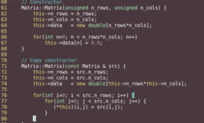

|
Hello. I am a PhD candidate in Applied and Computational Mathematics at Florida State University. Find more information below, or visit my blog for more current ramblings. |
| Office: | 409 B MCH |
| Email: | Click here |
 |
I'm interested in image and signal processing, pattern recognition, and data visualization in the realm of biomedical imaging problems. Specifically, I'm interested in the mathematical quantification of medically-interpretable image features for the purpose of computer-aided diagnosis of lung nodules. |
| Matthew C. Hancock, J.F. Magnan. Lung nodule malignancy classification using only radiologist-quantified image features as inputs to statistical learning algorithms: probing the Lung Image Database Consortium dataset with two statistical learning methods. Journal of Medical Imaging. (submitted) |
 |
pylidc: An object relational mapping (with additional functionality) for the LIDC dataset using sqlalchemy. |
|  | ACM computing seminar (Fall 2016) |